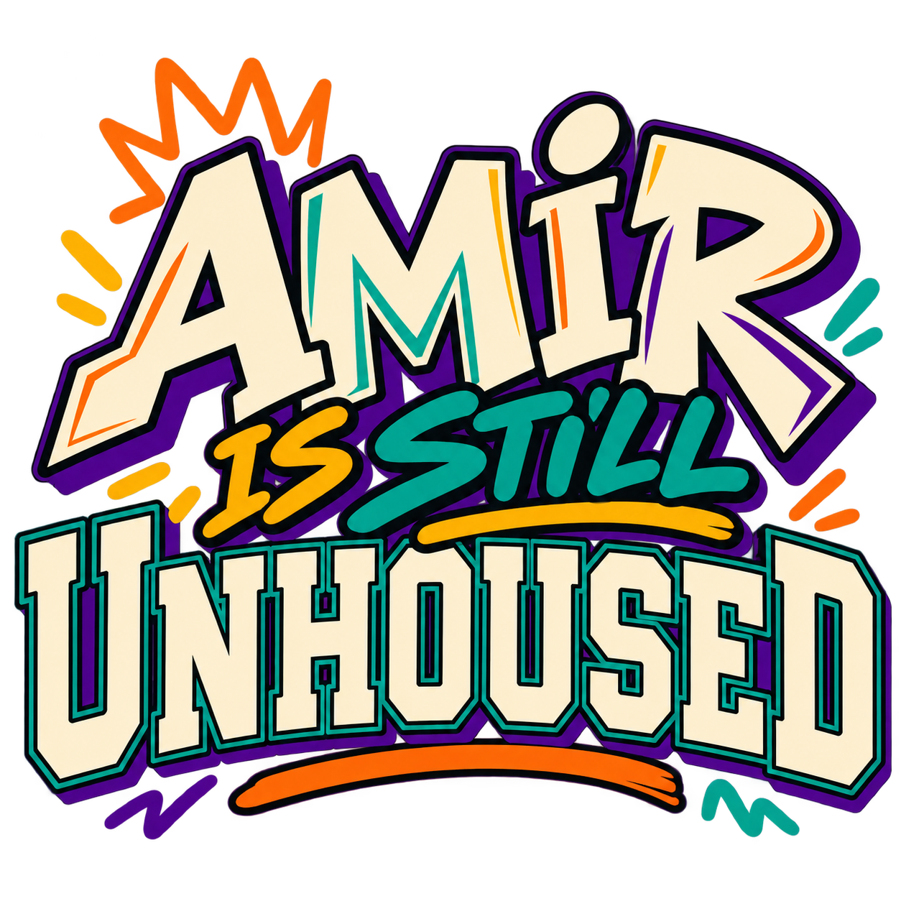

Community · Identity · Opportunity
We Became the Proof
Honoring Stories. Creating Opportunities. Strengthening Communities.
We Became the Proof is a community-centered initiative that honors lived experience, creates meaningful connections, and opens opportunities for people and communities to thrive.
Our Mission
We create evidence-informed experiences that respond to real community needs, celebrate identity, strengthen belonging, and help people move forward with dignity, connection, and opportunity.
Our Vision
We envision communities where people are seen, histories are honored, support is accessible, and every generation has opportunities to become the proof of what is possible.
These concise web expressions are adapted from WBP's existing one-pager, not presented as a formal legal mission statement.
How the model works
The Need. The Connection. The Proof.
We begin by listening, create experiences with intention, and learn from the people who take part.
01
The Need
Understand real community challenges, strengths, stories, and opportunities.
02
The Connection
Bring people together through culture, history, recreation, wellness, and experiences built around belonging.
03
The Proof
Track reach, learning, and participant experiences. Use the findings to make the next experience better.
Why it matters
Connection Is Not a Luxury
Belonging and meaningful connection matter to well-being. Our work brings history, learning, community resources, culture, and everyday joy together, and we never turn a gathering into a lecture.
cdc.gov/mmwr/volumes/73/wr/mm7324a1.htm
Explore the stories
Stories Behind the Proof

1967: The Championship That Changed the Game
Meet the WSSU Rams, Coach Clarence "Big House" Gaines, and Earl "The Pearl" Monroe.
Explore the 1967 Legacy →
Amir Is Still Unhoused
Explore how the Morrill Acts, educational access, and today's student housing challenges raise questions about what it really takes to thrive.
Explore Amir & the Morrill Acts →At today's event?
Take the 2-Minute Connection Check
It's anonymous and optional, and takes about two minutes. Scan the code or tap the button to tell us how today's WSSU event felt.
Open the surveyWe celebrate who you are, honor who you've become, and invest in who you're becoming.